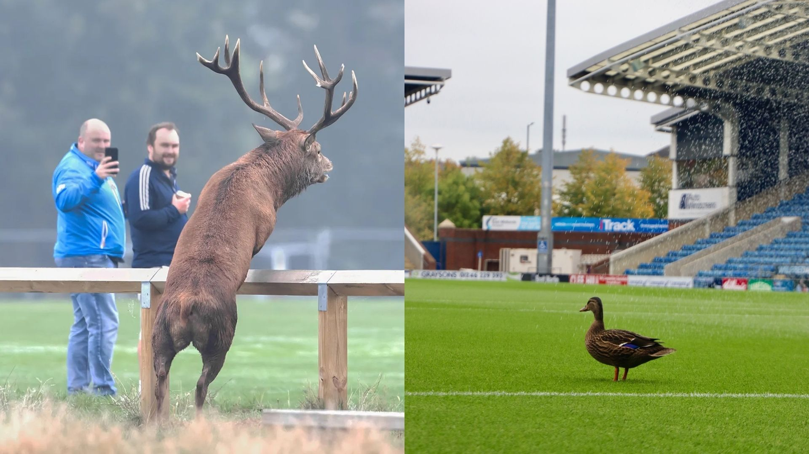

Training Report
Good news from The Den Arena training ground: Trent Quack-Arnold and Kevin de Bruinbuck have both recovered from minor muscle strains and have returned to full training session. This is a major boost for FC Animalia as the team prepares for a packed schedule, including the upcoming UEFA Champions League clash against Manchester City.
In today’s session, both players looked sharp and full of energy. Quack-Arnold was as graceful as ever, focusing on intricate passing combinations and close control drills, while Kevin de Bruinbuck showcased his signature power and timing, repeatedly executing clever dribbles and offensive movements. The coaching staff noted that the pair’s on-field chemistry remains intact, with creative interplay in training sessions highlighting why they are fan favorites.
With these two key players back, FC Animalia is entering the new week full of optimism and ambition, aiming to translate their training form into results on The Den Arena pitch.